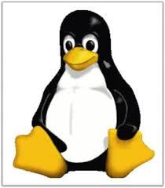
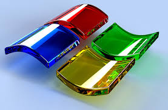

Sistema operativo (português europeu) ou operacional (português brasileiro) (em inglês: Operating System - OS) é um programa ou um conjunto de programas cuja função é gerenciar os recursos do sistema (definir qual programa recebe atenção do processador, gerenciar memória, criar um sistema de arquivos, etc.), fornecendo uma interface entre o computador e o usuário. Embora possa ser executado imediatamente após a máquina ser ligada, a maioria dos computadores pessoais de hoje o executa através de outro programa armazenado em uma memória não-volátil ROM chamado BIOS num processo chamado "bootstrapping", conceito em inglês usado para designar processos auto-sustentáveis, ou seja, capazes de prosseguirem sem ajuda externa. Após executar testes e iniciar os componentes da máquina (monitores, discos, etc), o BIOS procura pelo sistema operacional em alguma unidade de armazenamento, geralmente o Disco Rígido, e a partir daí, o sistema operacional "toma" o controle da máquina. O sistema operacional reveza sua execução com a de outros programas, como se estivesse vigiando, controlando e orquestrando todo o processo computacional | ||
|  |  | |